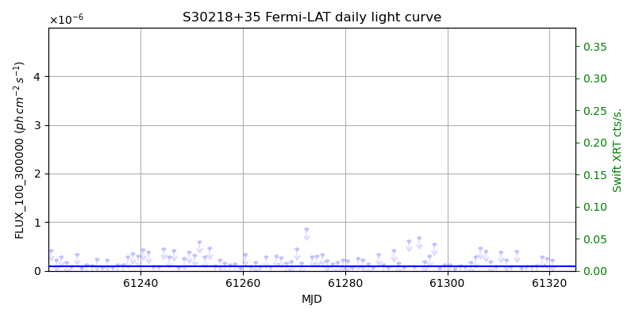
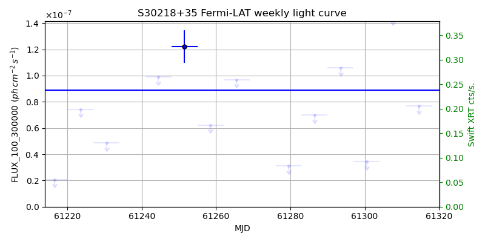
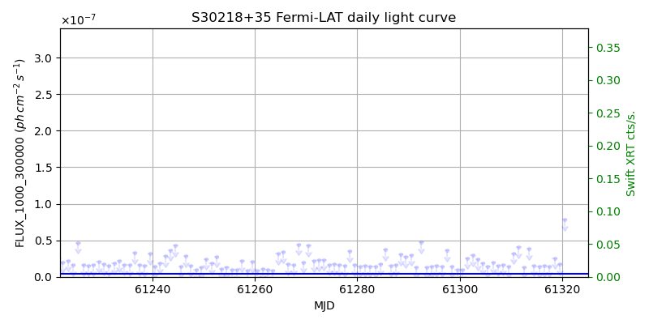
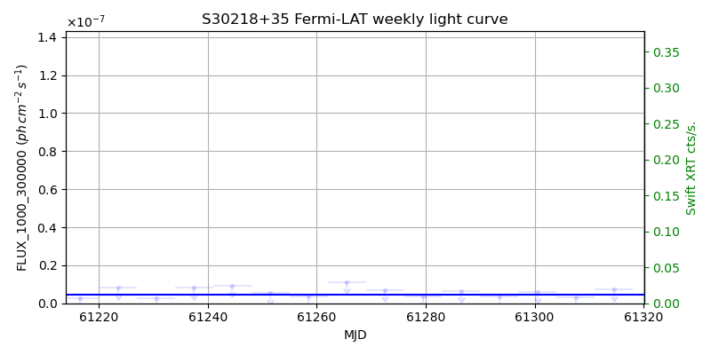

LAT Lightcurve site: https://fermi.gsfc.nasa.gov/ssc/data/access/lat/msl_lc/source/S3_0218p35
Swift site: https://www.swift.psu.edu/monitoring/source.php?source=S30218+35
NED: Query
Time of last update of this page: UT: 2026-10-10 15:12 (MJD: 61323.634)
| Property | Value |
|---|---|
| R.A. | 2:21:05.52 |
| Dec. | 35:56:13.2 |
| z | 0.944 |
| 3FGL SpectrumType | PowerLaw |
| 3FGL PL Index | 2.28 |
| 3FGL Flux_100_300000 | 8.90e-08 1 / (s cm2) |
| 3FGL Flux_1000_300000 | 4.65e-09 1 / (s cm2) |
| 3FGL Flux >200 GeV | 5.21e-12 1 / (s cm2) |
| 3FGL Extrap. Crab >200 GeV | 0.02 |
| 3FGL Flux After EBL Absorption >200GeV | 9.60e-14 1 / (s cm2) |
| 3FGL EBL Crab Fraction >200GeV | 0.00 |

| MJD | dMJD | Flux | dFlux | Frac3FGL | FracCrab>200GeV | EBLFracCrab>200GeV |
|---|---|---|---|---|---|---|
| 61317.50 | 0.50 | 1.08e-07 | 0.00e+00 | 0.00 | 0.00 | 0.00 |
| 61318.50 | 0.50 | 2.88e-07 | 0.00e+00 | 0.00 | 0.00 | 0.00 |
| 61319.50 | 0.50 | 2.61e-07 | 0.00e+00 | 0.00 | 0.00 | 0.00 |
| 61320.50 | 0.50 | 2.24e-07 | 0.00e+00 | 0.00 | 0.00 | 0.00 |
| 61322.50 | 0.50 | 4.68e-05 | 0.00e+00 | 0.00 | 0.00 | 0.00 |

| MJD | dMJD | Flux | dFlux | Frac3FGL | FracCrab>200GeV | EBLFracCrab>200GeV |
|---|---|---|---|---|---|---|
| 61286.50 | 3.50 | 6.98e-08 | 0.00e+00 | 0.00 | 0.00 | 0.00 |
| 61293.50 | 3.50 | 1.06e-07 | 0.00e+00 | 0.00 | 0.00 | 0.00 |
| 61300.50 | 3.50 | 3.45e-08 | 0.00e+00 | 0.00 | 0.00 | 0.00 |
| 61307.50 | 3.50 | 1.45e-07 | 0.00e+00 | 0.00 | 0.00 | 0.00 |
| 61314.50 | 3.50 | 7.67e-08 | 0.00e+00 | 0.00 | 0.00 | 0.00 |

| MJD | dMJD | Flux | dFlux | Frac3FGL | FracCrab>200GeV | EBLFracCrab>200GeV |
|---|---|---|---|---|---|---|
| 61317.50 | 0.50 | 1.47e-08 | 0.00e+00 | 0.00 | 0.00 | 0.00 |
| 61318.50 | 0.50 | 2.54e-08 | 0.00e+00 | 0.00 | 0.00 | 0.00 |
| 61319.50 | 0.50 | 1.70e-08 | 0.00e+00 | 0.00 | 0.00 | 0.00 |
| 61320.50 | 0.50 | 7.85e-08 | 0.00e+00 | 0.00 | 0.00 | 0.00 |
| 61322.50 | 0.50 | 4.67e-06 | 0.00e+00 | 0.00 | 0.00 | 0.00 |

| MJD | dMJD | Flux | dFlux | Frac3FGL | FracCrab>200GeV | EBLFracCrab>200GeV |
|---|---|---|---|---|---|---|
| 61286.50 | 3.50 | 6.59e-09 | 0.00e+00 | 0.00 | 0.00 | 0.00 |
| 61293.50 | 3.50 | 3.57e-09 | 0.00e+00 | 0.00 | 0.00 | 0.00 |
| 61300.50 | 3.50 | 6.11e-09 | 0.00e+00 | 0.00 | 0.00 | 0.00 |
| 61307.50 | 3.50 | 3.03e-09 | 0.00e+00 | 0.00 | 0.00 | 0.00 |
| 61314.50 | 3.50 | 7.15e-09 | 0.00e+00 | 0.00 | 0.00 | 0.00 |
--------------------------------------------------------- Using user-supplied coords: 2:21:05.52 35:56:13.2 2000 --------------------------------------------------------- FLWO UT night of: 2026-10-11 Local Sid. @ Midnight: 00:55 Sunset (-15.0) (local, UT): 19:04 02:04 Sunrise (-15.0) (local, UT): 05:18 12:18 Moonrise (local, UT): Moonset (local, UT): Moon phase: 0.01 --------------------------------------------------------- AzTime LSID UT Obj_el Obj_az Mn_el Mn_az Sep. --------------------------------------------------------- 19:04 19:58 02:04 13.8 55.9 -16.1 264.2 152.5 19:34 20:29 02:34 19.2 58.8 -22.3 267.8 152.8 20:04 20:59 03:04 24.7 61.5 -28.5 271.5 153.0 20:34 21:29 03:34 30.4 63.9 -34.7 275.4 153.2 21:04 21:59 04:04 36.2 66.1 -40.8 279.7 153.4 21:34 22:29 04:34 42.1 68.0 -46.8 284.6 153.7 22:04 22:59 05:04 48.1 69.6 -52.7 290.5 153.9 22:34 23:29 05:34 54.1 70.9 -58.4 297.7 154.1 23:04 23:59 06:04 60.1 71.7 -63.6 307.3 154.4 23:34 00:29 06:34 66.2 71.6 -68.1 320.3 154.6 00:04 00:59 07:04 72.3 70.0 -71.3 338.2 154.9 00:34 01:29 07:34 78.2 64.6 -72.6 0.4 155.1 01:04 01:59 08:04 83.6 45.6 -71.5 22.7 155.4 01:34 02:30 08:34 85.4 341.5 -68.3 40.8 155.6 02:04 03:00 09:04 81.1 302.0 -63.9 54.1 155.9 02:34 03:30 09:34 75.4 292.0 -58.7 63.8 156.1 03:04 04:00 10:04 69.3 288.9 -53.1 71.2 156.4 03:34 04:30 10:34 63.3 288.2 -47.3 77.2 156.6 04:04 05:00 11:04 57.2 288.6 -41.4 82.2 156.9 04:34 05:30 11:34 51.2 289.7 -35.3 86.6 157.1 05:04 06:00 12:04 45.2 291.1 -29.2 90.6 157.3 05:18 06:14 12:18 42.5 291.9 -26.5 92.4 157.4 --------------------------------------------------------- Dark hours >55 deg.: 5.61 srcstart (UT): 2026-10-11 05:38 srcend (UT): 2026-10-11 11:14